말씀
성경의 무오함을 믿습니다. 성경을 가르치고, 성경을 가르치는 사람을 세우는 교회입니다.
저희 교회를 소개해드립니다.
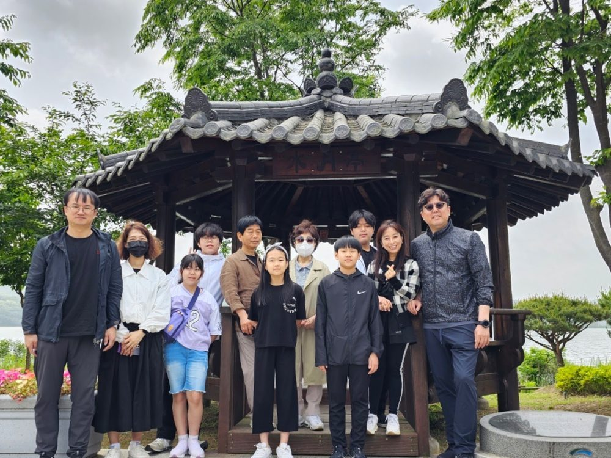
말씀과 기도로 세워진 이 공동체는 예수 그리스도의 사랑을 삶으로 실천하며, 지역사회와 열방을 섬기고자 세워졌습니다.
우리는 성경 중심의 제자훈련과 깊이 있는 말씀 연구를 통해, 성도 한 사람 한 사람이 하나님의 말씀 위에 굳건히 서도록 돕고 있습니다. 말씀 안에 뿌리내린 한 사람이 변화될 때, 가정과 교회, 세상 가운데 하나님의 나라가 확장된다고 믿기 때문입니다.
큰샘교회는 단순한 예배의 공간을 넘어, 삶의 모든 자리에서 복음을 살아내는 ‘살아있는 교회’가 되기를 소망합니다. 가정과 일터, 선교지에서 하나님의 뜻을 이루어가는 이 거룩한 여정에 여러분을 초대합니다.
성경의 무오함을 믿습니다. 성경을 가르치고, 성경을 가르치는 사람을 세우는 교회입니다.
예배에 목숨을 거는 교회입니다. 예배를 통해 하나님을 만나고, 하나님의 음성을 듣고, 순종합니다.
주님의 지상명령인 선교에 동참하여 하나님의 나라를 확장하는 교회입니다.
성경적 세계관으로 삶이 변화되는 교회입니다.
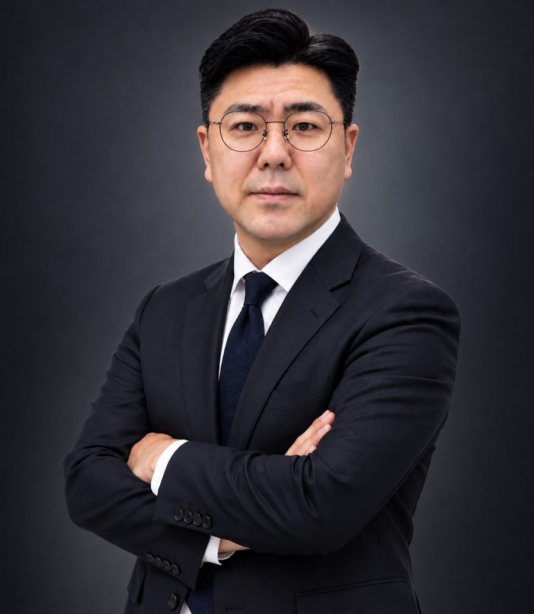
감리교 신학대학교 신학과
감리교 신학대학원 실천신학
목회자예수전도학교(PDTS), 목회자성경연구학교(PSBS)
어! 성경이 읽어지네 전문강사 (생터성경사역원)
미션퍼스펙티브 강사과정(선교한국)
목회자 성경 연구 학교 간사
생터성경사역원 서서울 남지부 지부장
어! 성경이 읽어지네 전문 강사
이중직 목회 — LG 하이케어솔루션 팀장
큰샘교회 담임목사
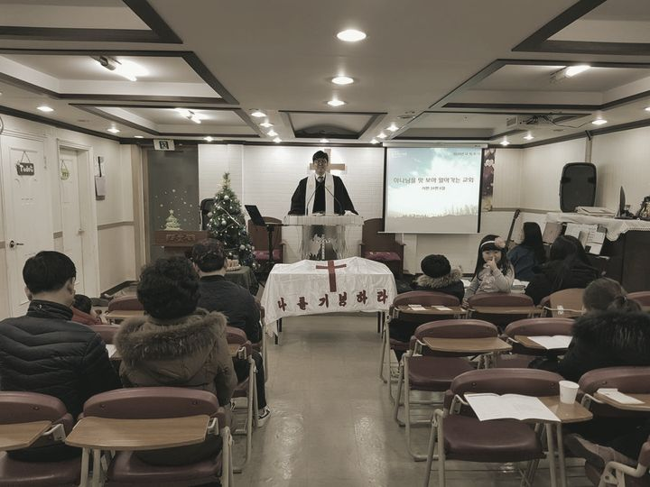
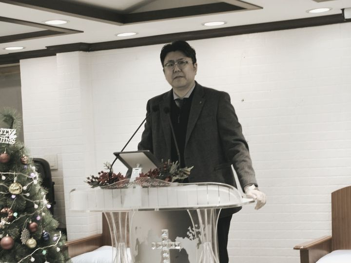
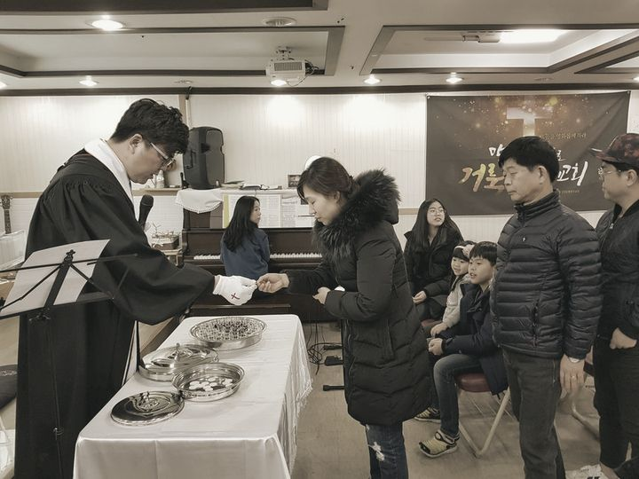
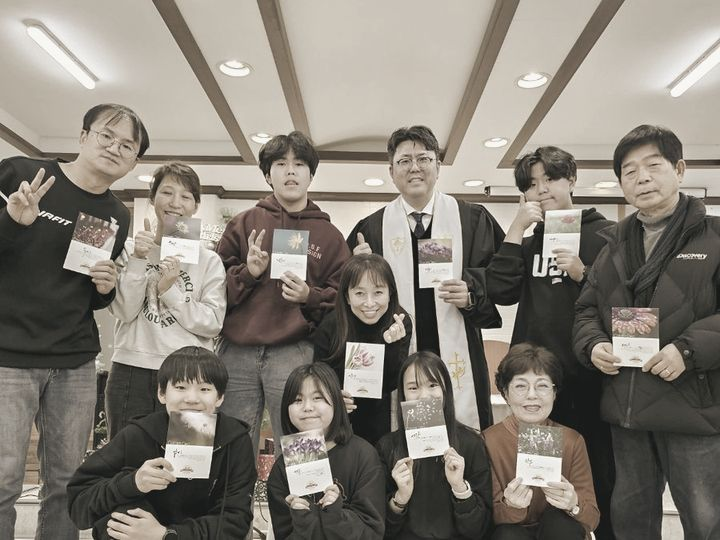
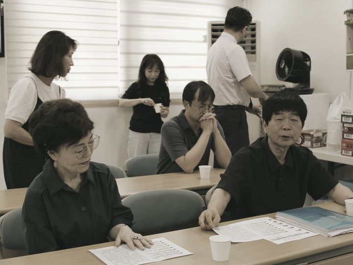
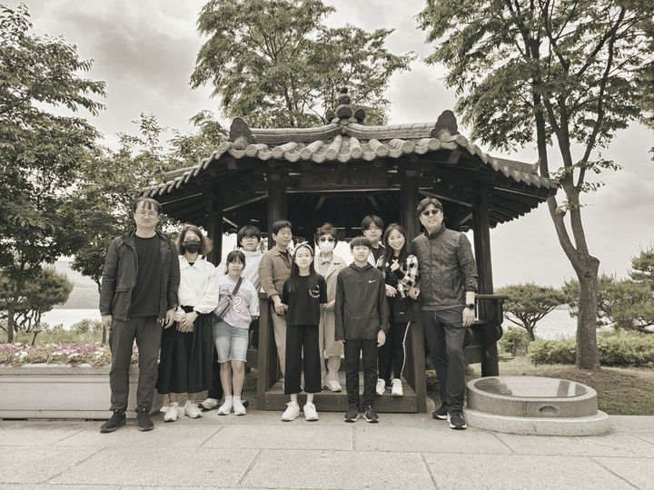
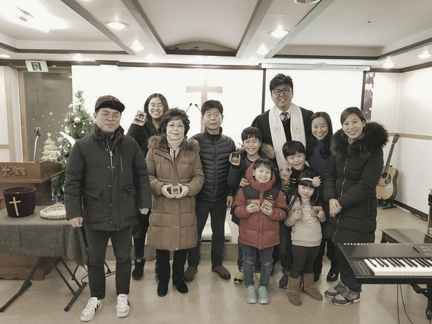
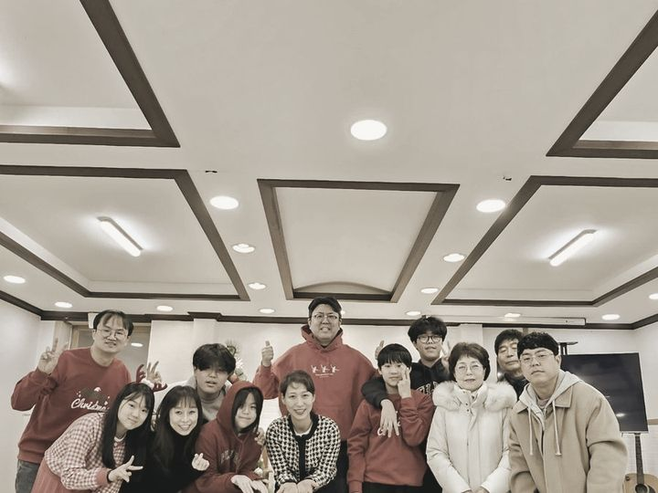
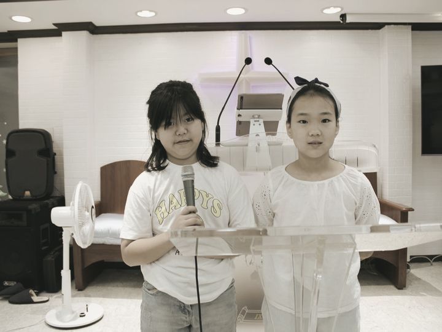
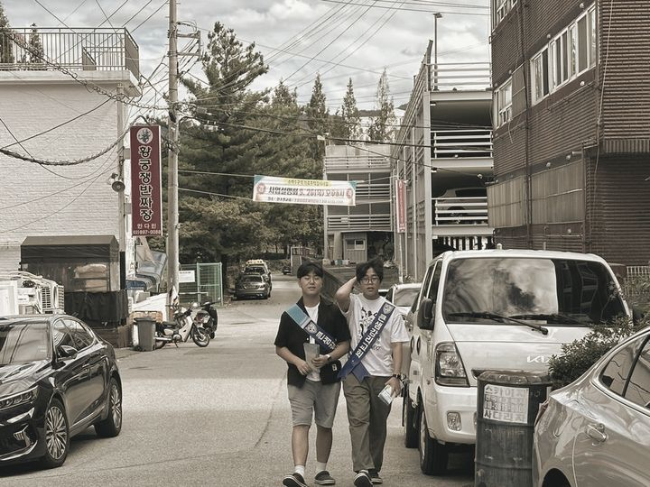
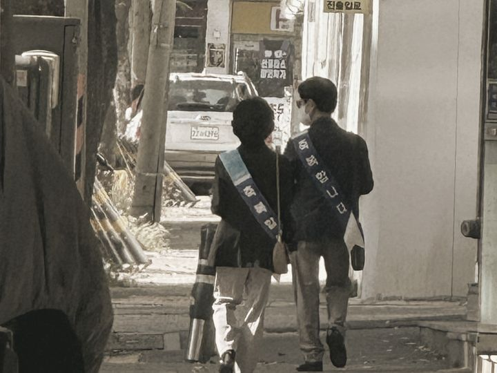
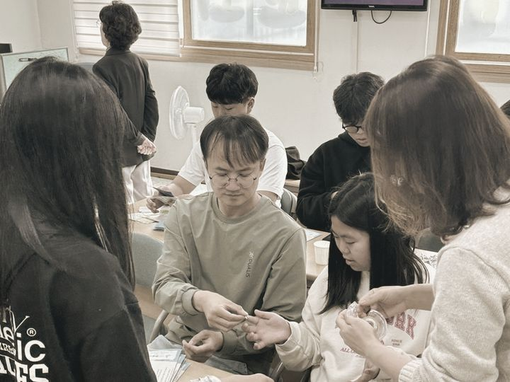
교회가 가진 사진만 씁니다. 날짜나 행사 이름을 지어내지 않았습니다.